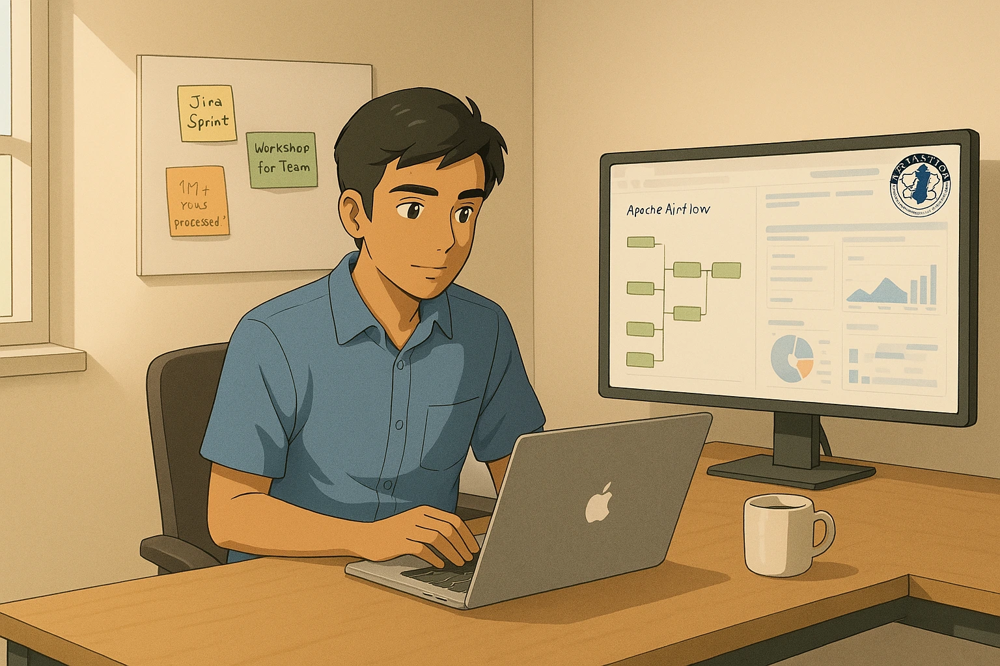

My Expertise
Work Experience
New Jersey Institute of Technology | AI Engineer
March 2025 – Present

Vandoo LLC | Programmer Analyst
November 2024 – February 2025

JerseySTEM | Data Scientist
February 2024 – November 2024

Bayer | Data Engineer
September 2023 – December 2023

Dassault Systems | R&D Software Engineer
April 2020 – July 2022

National Aerospace Laboratories | Project Assistant
December 2019 – March 2020

Cognizant Technology Solutions | Programmer Analyst
December 2018 – October 2019